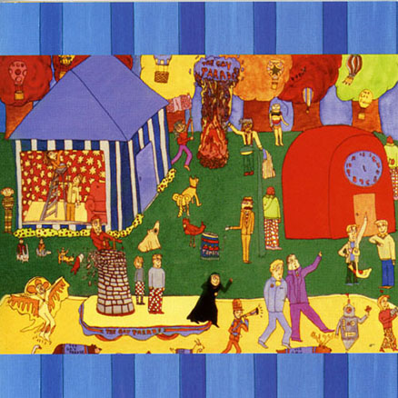

The Gay Parade (1999)
The third of Montreal album, The Gay Parade, is a concept album, similar to Aldhils Arboretum in that each song tells a new story. The characters described in each song are portrayed in the album artwork, the first of many created by Kevin Barnes' brother, David Barnes. He designed the majority of the subsequent album artwork for of Montreal.
Track Listing
- Old Familiar Way - 2:25
- Fun Loving Nun - 2:17
- Tulip Baroo - 2:10
- Jacques Lamure - 2:31
- The March of the Gay Parade - 2:55
- Neat Little Domestic Life - 2:45
- A Collection of Poems About Water - 3:57
- Y The Quale And Vaguely Bird Noisily Enjoying Their Forbidden Tryst/I'd Be a Yellow Feathered Loon - 2:40
- The Autobiographical Grandpa - 2:19
- The Miniature Philosopher - 1:54
- My Friend Will Be Me - 3:54
- My Favorite Boxer - 3:01
- Advice from a Divorced Gentlemen to His Bachelor Friend Considering Marriage - 2:08
- A Man's Life Flashing Before His Eyes While He and His Wife Drive off a Cliff into the Ocean - 3:04
- Nickee Coco and the Invisible Tree - 5:21
- The Gay Parade Outro - 0:47
Featured Track
Neat Little Domestic Life
This song tells of a couple that coexists in harmony, each doing their own work that benefits the both of them. They have found their niche within each other. The lyrics are simple-minded and do not delve into the emotions, just the surface of the "Neat Little Domestic Life".
Lyrics
You clean the bathroom
And I do the dishes.
I water the lawn
And you feed the fishes.
What a neat little domestic life that we live.
You change the light bulb and I hold the ladder.
I get the frying pan and you mix the batter.
What a neat little domestic life that we live.
All the lonely days are gone.
Those long lonely days when I was alone
And I felt this world was not the place I belonged
But then I met you and now I belong.
You rake the leaves and I start a fire.
I clean out the shed and you turn on the dryer.
What a neat little domestic life that we live.
I brush the dog and you knit a sweater.
You vacuum the rug and I write a letter.
What a neat little domestic life that we live.
I clear the table and you draw the curtain.
You ask if I'm happy and I tell you I'm certain
That this neat little domestic life is for me.